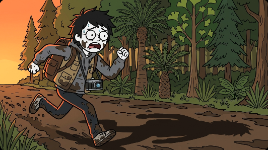

EP1 你跑得贏暴龍嗎？
恐龍時代：最新分鏡表、修改紀錄、我選的圖、科普統計。
分鏡 v7
EP1 分鏡表（最新：第 7 版）第 1～15 幕、178 格，可以開始畫：每格的背景描述和參考圖由 Claude 逐格看地圖手寫，房間和實驗室只附看得到的牆面圖；地圖與相機視野、中文 prompt、旁白、意見欄。

EP1 我選的圖每格你選定要留下的那一張，照劇情順序排、附旁白；要重畫的格子顯示空白「待補挑」。
科普
EP1 科普統計劇本 v8 逐句分成科普／混合／劇情，用秒數算比例（目前約 24%，目標 30%）；每段比例、27 個知識點對到書上第幾頁、逐句分類。